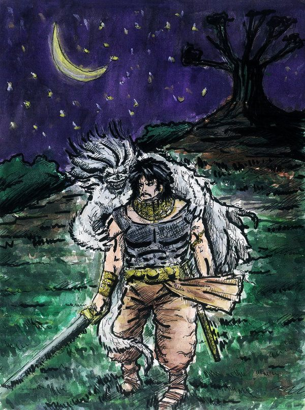

Who is at Fault?
It is sin to blame others for no reason
Vikramaaditya had held Vaitaal tightly. He was very angry with Vaitaal.
Vaitaal said - "Why are you so angry with me?" "Why do you trouble me so
much? Why do you run away like this every time?" "You don't worry, whatever
I am doing, I am doing for your good only. A time will come when you will feel
obliged to me. OK, Now listen to another story, so that we pass our time
easily. If you will not reply in spite of knowing, your head will split and
scatter all around, you know that." Vikram did not say anything, he listened to
him quietly.
Vaitaal started his story - "There lived a learned Braahman, named
Choodaavat, in Choodaapur city. He had a son whose name was Bhadraavat. He
was also learned like his father. When he grew up, his father started looking
for a girl for him, but he could not marry him in his life time. After the
death of his father, Bhadraavat maintained the respect of his father. But
only a few people can control their desires.
One day Bhadraavat went to one of his Yajamaan's house. There he saw a
beautiful girl and fell in love with her. That girls also expressed her love to
him. Bhadraavat expressed his desire to marry her, she accepted the proposal
and both were married. That girl's name was Laavanyavatee.
All days are not made equal. One day, it so happened that Bhadraavat went to
a pond to take bath along with his wife. Unfortunately she drowned in the
pond while taking bath and her body rested on the bottom of the pond.
Bhadraavat got mad, he remained seated on the banks of the pond for quite
some time. Later he ran away towards forest shouting her name. His condition
was like a beggar. He was wandering from country to country.
Wandering thus he arrived in Kanchanpur. There lived his father's fast friend
- Vaasudev. He recognized him, got very sad to see his condition. He wanted
to take him to his house, but Bhadraavat didn't agree for it. Vaasudev said to
his wife - "Today is Tuesday, prepare some Kheer for him." She cooked Kheer
for him and gave it to him, but he didn't eat it, just took it and sat outside
the house in the garden.
Now, a poisonous snake lived in the root of the tree. It came out of its
burrow, spit its poison in that Kheer and went away. Bhadraavat was so lost in
his ideas that he couldn't know it. After that Bhadraavat ate that Kheer and
in a little while he felt the effect of the poison. He rushed to the door of the
house and shouted - "You have given me poison." and saying this fell down at
the door only. He had died.
Vaasudev got worried seeing him falling down like this. He abused his wife
that she had killed a Braahman. She had given him poison. Since she was
innocent, hearing this blame she committed suicide jumping in the well."
After saying this Vaitaal said to Vikram - "Now Vikram, Do justice. Was
Vaasudev to be blamed for her death? Should he be punished for this or not?
Or Bhadraavat is responsible for this? because he blamed Vaasudev's wife?
What is your judgment?"
Vikram said - "Vaasudev is innocent in this incident. He abused his wife
without knowing the facts, and she committed suicide. And Vaasudev also
didn't know that a snake had spit its poison in his Kheer." "Then who is at
fault?" Vikram said - "It is the greatest sin to blame other without any
reason. Nobody was at fault." Vaitaal asked - "What about the snake? Is it
not at fault?" "No, Because spitting poison is its nature." Vaitaal asked -
"What about Bhadraavat himself?" Vikram said - "He could be, but he was
not, because he had gone mad and a mad man has no sense of anything."
Vaitaal asked - "Then who is responsible for this?" Vikram said - "In fact
nobody. It was all destined like this."
Vikram got silent after saying this and Vaitaal also did not laugh at this time.
He just said - "You are right, Vikram." Vikram was moving towards the
cremation ground. They had come more than half the way. Vaitaal said -
"Vikram, Change your path, take the right path, this time is for a poisonous
snake to appear." Vikram obeyed him. He was happy as Vaitaal was protecting
his life also.
|

|